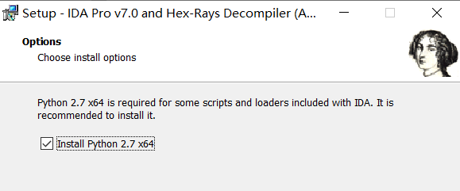
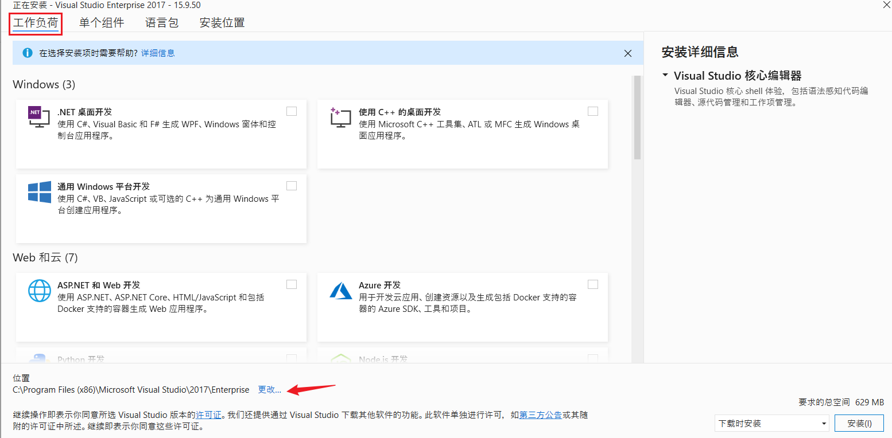
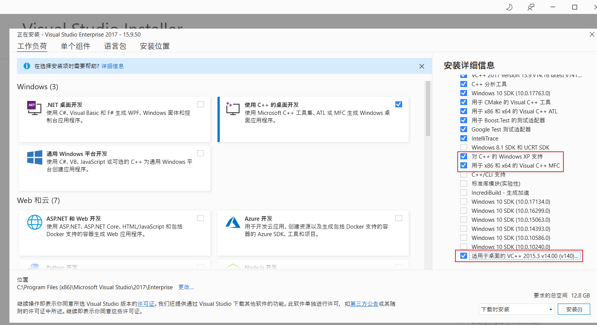
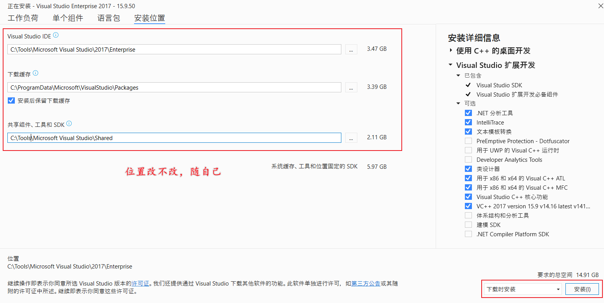
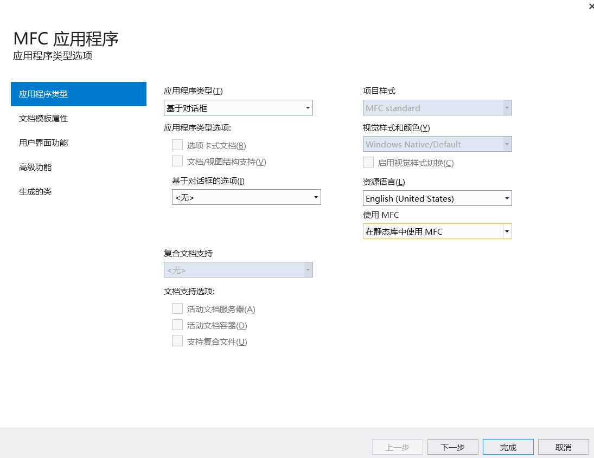
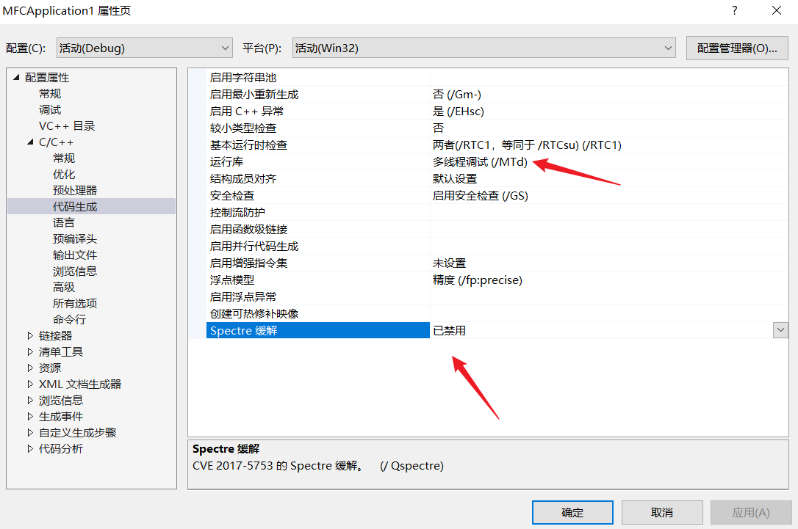
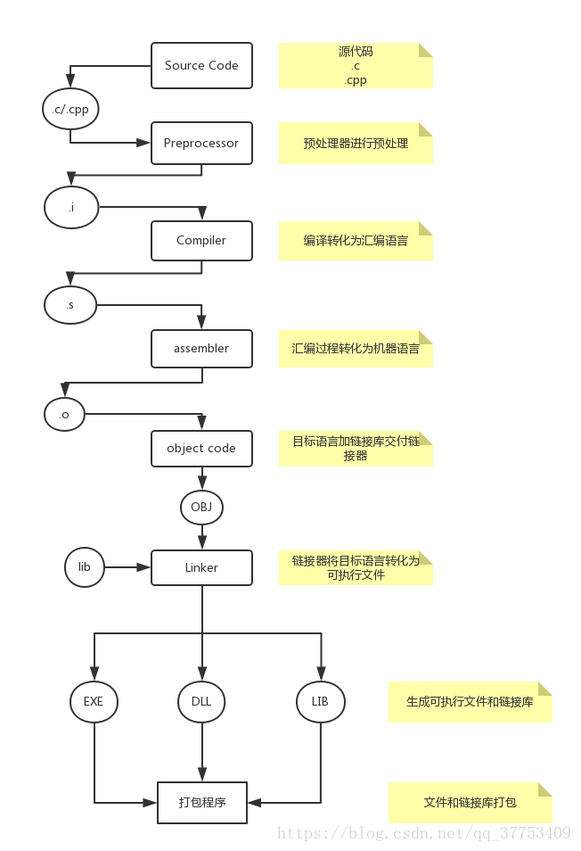
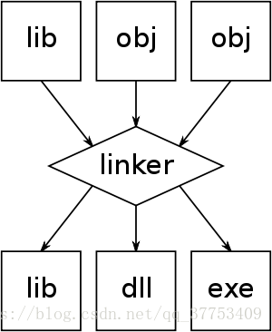
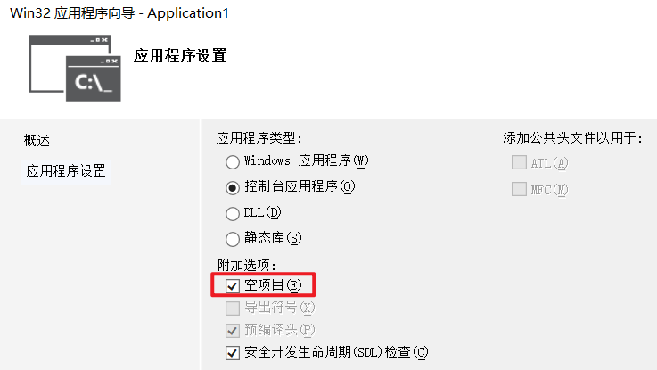
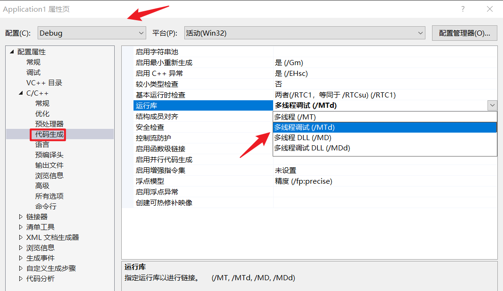

环境
Win 10 专业版虚拟机
激活地址：https://www.bbsmax.com/A/QW5Y0pneJm/
系统安装完毕后，首先以管理员身份打开 CMD 命令行窗口，按下 Win +X，选择命令提示符(管理员)。
说明：kms.xspace.in 是 kms 服务器地址，可能会失效，如果激活失败，可以自行搜索 kms 服务器地址，将 kms.xspace.in 替换成新的地址即可，比如换 kms.03k.org，参考可用的 kms 激活服务器有哪些。
# 公开地址有： kms.loli.best kms.cangshui.net kms.iaini.net kms.huengyamm.xyz kms.kuretru.com kms.03k.org 还有其他服务器，可以自行查找。Win10 专业版用户请依次输入：
slmgr /ipk W269N-WFGWX-YVC9B-4J6C9-T83GX
slmgr /skms kms.03k.org
slmgr /ato
觉得不安全激活后可以随便修改 kms 激活服务器地址：如
slmgr /skms zhaocai按 Win + R 键，输入框输入
slmgr.vbs -xpr打开，查看激活到期时间的相关信息slmgr /upk，是卸载key
slmgr /ckms，是密钥管理服务计算机名称清除
slmgr /rearm，是重置计算机的授权状态- https://baike.baidu.com/item/KMS/66195
- https://zhuanlan.zhihu.com/p/152269085
7zip\010Editor\OllyICE\x96dbg
- 7zip 直接解压安装
- 010Editor 直接运行
OllyICE 直接解压运行
C:\Tools\OllyICE\OllyDBG.EXE
x96dbg 直接解压运行
C:\Tools\x96dbg\release\x32\x32dbg.exe
C:\Tools\x96dbg\release\x64\x64dbg.exe
IDA
解压 -- 安装 -- 输入 SN 一直下一步就 ok。
SN：qY2jts9hEJGy


Visual Studio 2017
Enterprise:
NJVYC-BMHX2-G77MM-4XJMR-6Q8QF
Professional:
KBJFW-NXHK6-W4WJM-CRMQB-G3CDH
工作负荷

选择安装
使用 C++ 的桌面开发 √

- 通用 Windows 平台开发 （后期再使用）
Visual Studio 扩展开发 √
默认勾选即可
单个组件（默认即可）


等待安装完成，输入帮助 -- 注册产品。
MFC 应用创建
基于对话框 - 静态库中使用 MFC


运行库安装
解压安装，默认推荐即可。
汇编金手指
直接使用
Kali 安装
略
前言
使用 C 语言的理由和应用领域
- 一些 C 的历史、标准、特性介绍。
- 可移植、更强的操作性、广泛
- 操作系统、编译器、游戏、嵌入式、桌面程序
C 语言的标准
- K&RC 标准
- C89/C90
- C99
- C11
编译过程
C 语言编译
- 源码（
.c/.cpp）：编写 c or cpp 源码 - 编译（
.obj/.o）源程序通过翻译程序加工以后生成的机器语言程序。【编译器（Compiler）】 - 连接（
.exe）：其实就是一个“打包”的过程，它将所有二进制形式的目标文件和系统组件组合成一个可执行文件【系统提供的组件（比如标准库）结合起来，这些组件都是程序运行所必须的。】。完成链接的过程也需要一个特殊的软件，叫做 链接器（Linker） 。例如我们要在屏幕中输出字符，这必须调用系统提供的库才能够实现。可执行程序。
完整的编译步骤

预处理（预处理头文件、宏）
sudo gcc -E hello.c -o hello.i
编译（c --> 汇编）
sudo gcc -S hello.i -o hello.s
汇编（汇编语言 --> 二进制）
sudo gcc -c hello.s -o hello.o
【注】-C 和 -c 的区别，前者会直接完成链接变成可执行文件。
链接（二进制文件 --> 可执行文件）
sudo gcc hello.o -o hello
在 Linux 中是没有文件后缀这样的概念的（一切皆文件），只是起标识作用。
进制和位
进制
- 十六进制：0 ~ 9 A B C D E F
- 十进制：0~ 9
- 八进制：0 ~ 7
- 二进制：0 ~ 1
直接上计算器就完事了 ~
位
操作系统位数：x86、x64 分别对应 32 位和 64 位。
- QWORD 64 位
- FWORD 48 位
- DWORD 32 位
- WORD 16 位
- BYTE 8 位
- BIT 1 位
Visual Studio & CLion 基本使用
四种运行库编译选项的区别
- 静态编译、动态编译（编译出来可能会缺少 xx 库）
- Visual Studio 中 MD 与 MT 的区别及运行库类型选择 - 知乎 (zhihu.com)
MT与MD的区别/MT： 是multithread-static version，是多线程静态版本的意思，项目会使用运行时库的多线程静态版本，编译器会将LIBCMT.lib放入.obj文件中，以便链接器使用LIBCMT.lib解析外部符号；/MTd： 是定义了_DEBUG和/MT，是/MT类型的debug版本；/MD： 是multithread-dll version，是多线程dll版本的意思，项目会使用运行时库的多线程动态dll版本，编译器会将MSVCRT.lib放入.obj文件中，在编译项目时，它会静态链接MSVCRT.lib，但在实际运行过程中，它会链接使用MSVCR90.dll；MDd： 是定义了_DEBUG和/MD，是/MD类型的debug版本；
总起来说，
/MD类型表示运行时库不集成，生成的文件小，程序运行时动态加载对应的dll；/MT类型表示运行时库**集成**，生成的文件较大，在链接时将C/C++运行时库集成到程序中。【写那东西的时候静态编译就好了】


运行、Debug 就是常规调试了。就是可以看内存、变量值、运行步骤、调用关系之类的。
碎碎念
<> 在系统标准库里面寻找
" " 优先在本目录寻找，就比如自己写的宏
# pragma once库预处理，多次包含也只会编译保留一份。调试
F5 运行
F9 下断点
F10 单步执行
F11 单步步入
编译器
编译器就是将“一种语言（通常为高级语言）”翻译为“另一种语言（通常为低级语言）”的程序。一个现代编译器的主要工作流程：源代码 (source code) → 预处理器 (preprocessor) → 编译器 (compiler) → 目标代码 (object code) → 链接器 (Linker) → 可执行程序 (executables)
连接器
在 C 语言中，一个重要的思想就是分别编译，即若干个源程序可以在不同的时候单独进行编译，然后在恰当的时候整合到一起。但是连接器一般是与 C 编译器分离的，连接器如何做到把若干个 C 源程序合并成一个整体呢？链接过程就是空间分配过程。
连接器的输入是一组目标模块和库文件。连接器的输出是一个载入模块。连接器读入目标模块和库文件，同时生成载入模块。对每个目标模块中的每个外部对象，连接器都要检查载入模块，看是否已有同名的外部对象。如果没有，连接器就将该外部对象添加到载入模块中；如果有，连接器就要开始处理命名冲突。除了外部对象之外，目标模块还可能包括了对其他模块中的外部对象的引用。
CLion
参考 IDEA 使用。
前人栽树